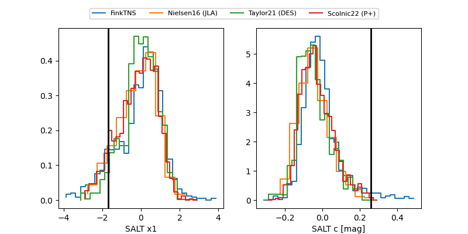

2025ahre
Target 2025ahre at 2025-12-20 12:25
Aliases and brokers:
FINK: fink-portal.org/ZTF25acibezh
Lasair: lasair-ztf.lsst.ac.uk/objects/ZTF25acibezh
ALeRCE: alerce.online/object/ZTF25acibezh
TNS: wis-tns.org/object/2025ahre
YSE: ziggy.ucolick.org/yse/transient_detail/2025ahre
alt names
ZTF25acibezh (ztf,fink_ztf)
2025ahre (tns,yse)
Coordinates:
equatorial (ra, dec) = 136.6214,+42.07026
equatorial (HMS+DMS) = 09:06:29.15,+42:04:12.92
galactic (l, b) = (179.4484,+42.27466)
Flags:
Photometry:
last ztfg=20.20, ztfr=19.96
2 ztfg, 2 ztfr detections
Lightcurve

Visibility


Additional plots
